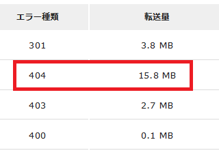
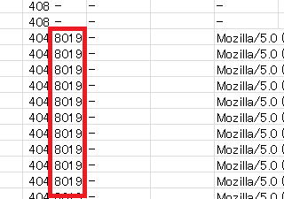

404ページのカスタマイズも考え物だ
「404 Not Found」のページをカスタマイズしていたのですが、意外と転送量が多かったため容量を削減することにしました。

転送量が多いといっても、月間でせいぜい15MBぐらいなため、特に何の影響もないのですが、クローラーによるアクセスで集中的に404が発生すると重くなると感じています。人間によるアクセスのみの場合はそう頻繁に404ページが表示されるわけではありませんが、スクレイピングなどのクローラーが短時間に集中的にアクセスする場合は多少は影響があるはずです。
そこで404ページのCSSをインライン化してみたのですが、これが裏目になり、かえって転送量が増える結果になってしまいました。
一般的には、CSSをインライン化することにより、スタイルシートへのリクエストはなくなるため、サーバーへの負担が軽くなるかと思います。
けれども、スクレイピングなどのクローラーによるアクセスは、HTMLファイルのなかから情報を抽出するのが目的のため、そもそもCSSや画像にアクセスすることはなく、HTMLファイルへのリクエストのみのケースが多いです。
そのため、CSSをインライン化することでHTMLファイル内のテキスト量が増えてしまうため、かえって転送量が増えてしまう結果になってしまいました。
ちなみに、自サイトでの404ページの転送量は約8,000バイトであるのに対し、２ちゃんねるの場合は約150バイト、Googleでは約1,500バイト、エックスサーバーでは約3,000バイトでした。

自サイトでは404ページにもGoogleアナリティクスのタグを設置したかったため、数百バイトまで落とすことはできなかったものの、できるだけ文字数を減らすなどしてこれを「1,666バイト」まで減らすことができました。
ただ、容量を減らせば減らすほどよいというわけでもなく、カスタム404ページを表示させるためには最低限のファイル容量が必要になります。
ウィキペディアによると、「（IE6以前）では、512バイト以下の場合は送信された404用のページを表示せずに」とありますが、現在のIE11でも上記の約150バイトの２ちゃんねるでは表示されなかったため、現在でも512バイト以下の場合は表示されない仕様になっているものと思います。
そのため、最低でも512バイト以上にしつつ、なおかつできるだけ小さな容量ということになるかと思いますが、Googleアナリティクスのタグ自体で400バイト以上あることを考えると、最低でも1,000バイトから1,500バイト程度はかかってしまうかもしれません。
いずれにしましても、大量のエラーが発生する場合は404ページが何度も表示されることになるかと思いますので、カスタマイズする際はできるだけ容量を軽くしておくことをおすすめします。